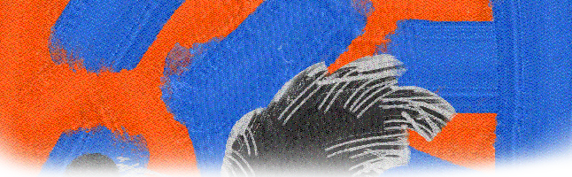
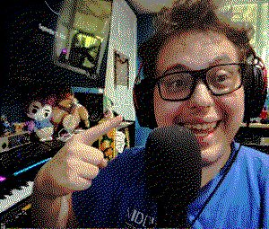
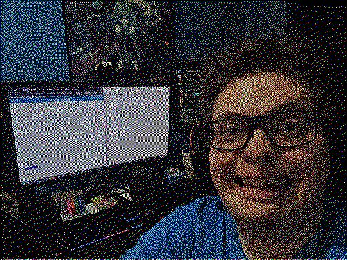

Introduction

I am the one they call (Caleb) Ambrose. I could tell you I'm an audio engineer who graduated from MTSU (pending), I could tell you I'm a game developer of a TTRPG (and more [pending]), I could even tell you I'm a composer (creator of "Master Of Rime"), but the only thing I can say in confidence is that I love to make things happen. I love to dabble in just about everything, and it is my goal to encourage others to do the same!
The Incorporation
So what is this, "KoasterFunk Incorporated?"
Here, on my website, I have amalgamated my, and other's, ideas into something whole. Just in being here, you are a customer of my incorporated mind. You are valued, so thank you.
We are also against the use of generative AI here.
Any more questions?
More About Me
10/4/2026

If you meet me out in the field, I’ll likely tell you to call me “Ambrose.” This is my last name, but it’s the name I recognize best. I am personally not very fond of my first name being so common, so after experiencing 2 years of JROTC in high school, I started using my last name like my first. You can also call me Koaster if you really want to freak me out one day -- that’s my online alias.
Schooling
I originally hated school before college. I thought I was bad at learning and that generated a lot of self-hatred towards myself. Funnily enough, it was Covid that brought me out of my depressive state. When classes suddenly got lenient and online based, I realized the only reason why I was not as great as I wanted to be was because I was burnt out from how the school wanted me to learn. It clicked with me that my school was trying to teach a fish how to climb a tree. I had to teach myself how to swim.
Now I’m about to graduate MTSU with a bachelor’s in audio production.
Career
I may call myself an audio technician, but I am much more than that. I’m a curious creator, and my attention is always shifting from one idea to the next. Funny enough, this exact blessing was the reason why I hated myself! I have trouble sticking to one thing, for my mind always wants to do something new -- even if the new thing is harder. I love to push limits and see what’s possible. I cannot shackle myself to what works, for I feel the need to test if we are complacent in mediocrity.
So what does that mean for me? What am I?
I’m The Fool, and I wouldn’t have it any other way…